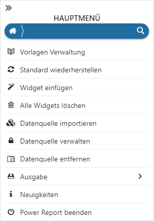
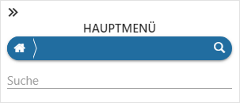

Durch Anwahl des Buttons in der Kopfleiste des Power Reports öffnet sich das Hauptmenü.

Menüpunktsuche

Ø Suche
Mit Hilfe des Lupen-Symbols wird der Suchbereich geöffnet. Hier kann durch Eingabe eines Suchbegriffs nach Menüpunkten gesucht werden, wobei die Suche in Form einer Volltextsuche erfolgt.
Menüpunkte
Unterhalb der Suche werden die einzelnen Menüpunkte des Hauptmenüs angezeigt.
Ø
Es wird die Vorlagen Verwaltung geöffnet. Hier können u.a. Vorlagen gelöscht werden.
Ø
Durch Anwahl von "Standard wiederherstellen" werden alle Änderungen im Power Report verworfen und die Vorlage mit den zuletzt gespeicherten Informationen geladen.
Ø
Durch Anwahl des Buttons "Widget einfügen" kann ein neue Widgets in den Power Report eingefügt werden.
Ø
Durch Anwahl des Eintrags "Alle Widgets löschen" werden alle Widgets aus der Vorlage entfernt.
Ø (nur im Modus Power Report mit Datenquelle)
Mit Hilfe der Auswahl Power Report - Hauptmenü - Datenquelle importieren kann die Datenquelle einer anderen Auswertung in den Power Report geladen werden.
Ø (nur im Modus Power Report mit Datenquelle)
Durch Anwahl des Eintrags Power Report - Hauptmenü - Datenquellen verwalten können den Datenquellen spezifische Farben zugewiesen werden.
Ø (nur im Modus Power Report mit Datenquelle)
Der Punkt Datenquelle entfernen steht nur zur Verfügung, wenn zuvor zumindest eine weitere Datenquelle in den Power Report geladen wurde. Sollten bereits Widgets auf Grundlage der zu löschenden Datenquelle eingebaut worden sein, so werden diese Widgets automatisch entfernt.
Ø
Durch Anwahl des Buttons Ausgabe werden alle Widget (mit ihrem aktuellen Inhalt) ausgegeben. Hierbei stehen diverse Ausgabeformate zur Verfügung.
Ø
Durch Anwahl des Buttons "Neuigkeiten" wird die Internetseite https://d.mesonic.com/BI geöffnet. Auf dieser werden Ihnen die neuesten Informationen zum Thema "WinLine BI" präsentiert.
Ø
Durch Anwahl dieses Buttons wird der Power Report - ohne weitere Rückfrage - geschlossen.